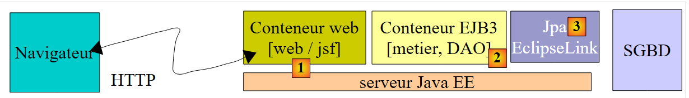
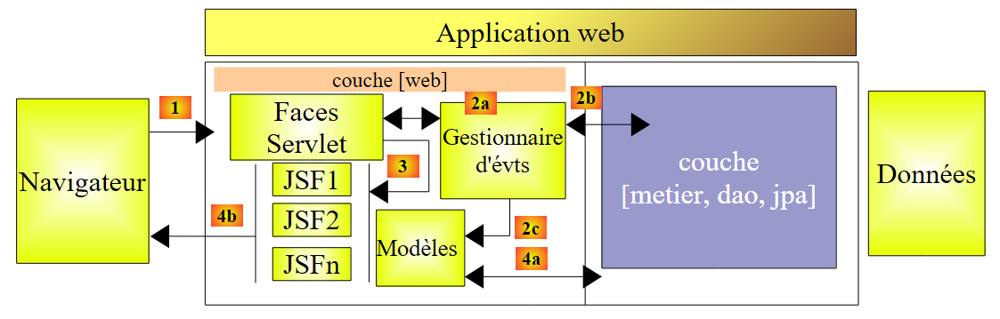
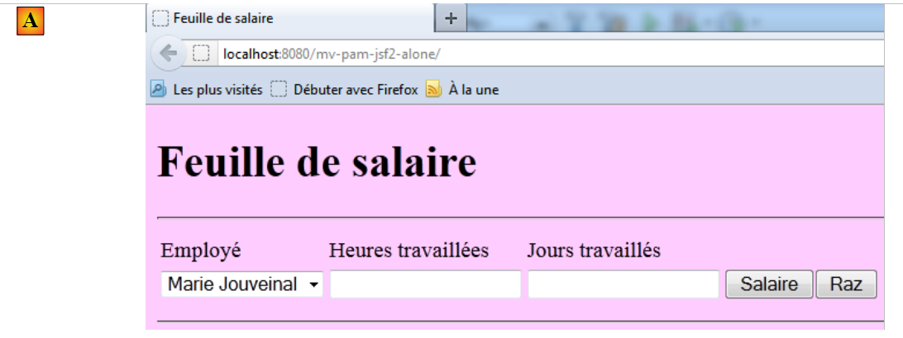
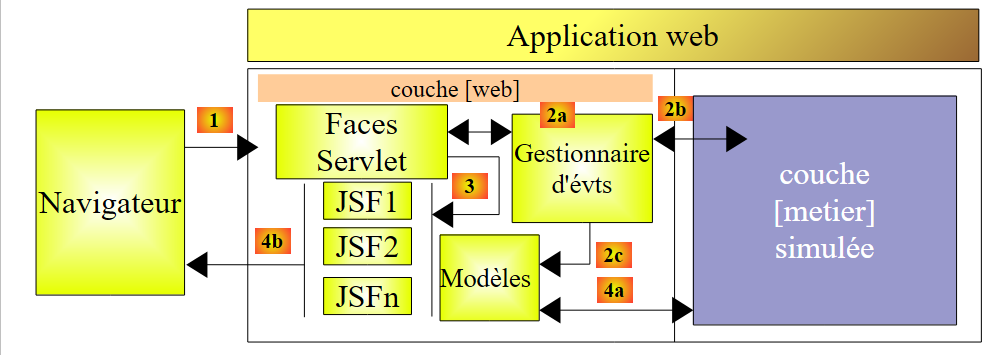
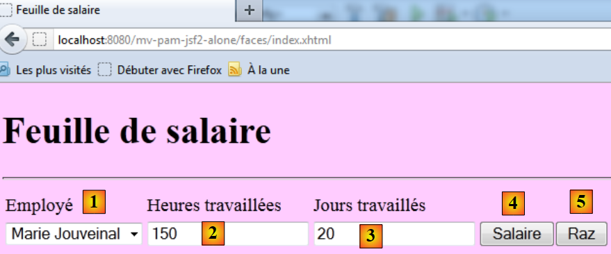

10. الإصدار 5 - تطبيق PAM Web / JSF
10.1. بنية التطبيق
ستكون بنية تطبيق الويب PAM على النحو التالي:
 |
في هذا الإصدار، سيستضيف خادم GlassFish جميع طبقات التطبيق:
- يتم استضافة الطبقة [الويب] بواسطة حاوية السيرفلت الخاصة بالخادم (1 أدناه)
- يتم استضافة الطبقات الأخرى [منطق الأعمال، DAO، JPA] بواسطة حاوية EJB3 الخاصة بالخادم (2 أدناه)
 |
تم بالفعل تنفيذ مكونات [منطق الأعمال، DAO] للتطبيق الذي يعمل في حاوية EJB3 في تطبيق العميل/الخادم الذي تمت مناقشته في القسم 7.1، والذي كان له البنية التالية:
 |
كانت طبقات [منطق الأعمال، DAO] تعمل في حاوية EJB3 بخادم GlassFish، بينما كانت طبقة [واجهة المستخدم] تعمل في تطبيق وحدة التحكم أو تطبيق Swing على جهاز آخر:
 |
في بنية التطبيق الجديد:
 |
لا يلزم كتابة سوى طبقة [web / jsf]. أما الطبقات الأخرى [business، DAO، JPA] فهي موجودة بالفعل.
في الوثيقة [ref3]، يظهر أن تطبيق الويب الذي يتم فيه تنفيذ طبقة الويب باستخدام Java Server Faces له بنية مشابهة لما يلي:
 |
تطبق هذه البنية نمط تصميم MVC (النموذج، العرض، وحدة التحكم). تتم معالجة طلب العميل على النحو التالي:
إذا تم إرسال الطلب باستخدام GET، يتم تنفيذ الخطوتين التاليتين:
- الطلب - يرسل متصفح العميل طلبًا إلى وحدة التحكم [Faces Servlet]. تتولى وحدة التحكم معالجة جميع طلبات العميل. وهي نقطة دخول التطبيق. وهي تمثل حرف C في نمط MVC.
- الاستجابة - يوجه وحدة التحكم C الصفحة JSF المحددة لعرضها. هذه هي العرض، وهي الحرف V في MVC. تستخدم صفحة JSF نموذج M لتهيئة الأجزاء الديناميكية من الاستجابة التي يجب إرسالها إلى العميل. هذا النموذج هو فئة Java يمكنها استدعاء الطبقة [الأعمال] [4a] لتزويد العرض V بالبيانات التي يحتاجها.
إذا تم إرسال الطلب عبر POST، تحدث خطوتان إضافيتان بين الطلب والاستجابة:
- الطلب - يقوم عميل المتصفح بتقديم طلب إلى وحدة التحكم [Faces Servlet].
- المعالجة - تقوم وحدة التحكم C بمعالجة هذا الطلب. في الواقع، يرافق طلب POST بيانات يجب معالجتها. للقيام بذلك، تتلقى وحدة التحكم المساعدة من معالجات الأحداث الخاصة بالتطبيق [2a]. قد تتطلب معالجات الأحداث هذه طبقة الأعمال [2b]. قد تحتاج معالجة الأحداث إلى تحديث نماذج M معينة [2c]. بمجرد معالجة طلب العميل، قد يؤدي ذلك إلى استجابات متنوعة. ومن الأمثلة الكلاسيكية على ذلك:
- صفحة خطأ إذا تعذر معالجة الطلب بشكل صحيح
- صفحة تأكيد في الحالات الأخرى
تُرجع معالجة الأحداث نتيجة من نوع سلسلة تسمى مفتاح التنقل إلى وحدة التحكم [Faces Servlet].
- التنقل - تختار وحدة التحكم صفحة JSF (= العرض) المراد إرسالها إلى العميل. ويستند هذا الاختيار إلى مفتاح التنقل الذي يرجعه معالج الأحداث.
- الاستجابة - ترسل صفحة JSF المحددة الاستجابة إلى العميل. وتستخدم نموذج M الخاص بها لتهيئة أجزائها الديناميكية. ويمكن لهذا النموذج أيضًا استدعاء الطبقة [الأعمال] [4a] لتزويد صفحة JSF بالبيانات التي تحتاجها.
في مشروع JSF:
- وحدة التحكم C هي السيرفلت [javax.faces.webapp.FacesServlet]. توجد هذه في مكتبة [jsf-api.jar].
- يتم تنفيذ طرق العرض V بواسطة صفحات JSF.
- يتم تنفيذ نماذج M ومعالجات الأحداث بواسطة فئات Java التي غالبًا ما تسمى "backing beans".
- في إصدارات JSF 1.x، يتم تعريف تعريفات bean وقواعد التنقل من صفحة إلى أخرى في ملف [faces-config.xml]. ويحتوي هذا الملف على قائمة العروض وقواعد الانتقال من واحدة إلى أخرى. بدءًا من الإصدار 2 من JSF، يمكن إنشاء تعريفات bean باستخدام التعليقات التوضيحية، ويمكن ترميز انتقالات الصفحات بشكل ثابت مباشرةً في كود bean.
10.2. كيفية عمل التطبيق
عندما يتم طلب التطبيق لأول مرة، تظهر الصفحة التالية:
 |
ثم تقوم بملء النموذج وطلب الراتب:
 |
يتم عرض النتيجة التالية:
 |
يحسب هذا الإصدار راتبًا وهميًا. لا تنتبه إلى محتوى الصفحة، بل إلى تصميمها. عند النقر على زر [إعادة الضبط]، ستعود إلى الصفحة [أ].
يتم تمييز الإدخالات غير الصحيحة، كما هو موضح في المثال التالي:
 |
10.3. مشروع NetBeans
سنقوم بإنشاء نسخة أولية من التطبيق حيث سيتم محاكاة طبقة [الأعمال]. وستكون لدينا البنية التالية:
 |
عندما تطلب معالجات الأحداث أو النماذج بيانات من طبقة [الأعمال] [2b، 4a]، ستزودها ببيانات وهمية. الهدف هو الحصول على طبقة ويب تستجيب بشكل صحيح لطلبات المستخدم. وبمجرد تحقيق ذلك، لن يتبقى سوى تثبيت طبقة الخادم التي تم تطويرها في القسم 7.1:
 |
وستكون هذه هي النسخة 2 من الإصدار الويب لتطبيق PAM الخاص بنا.
مشروع NetBeans الخاص بالإصدار 1 هو مشروع Maven التالي:
 |
- في [1]، ملفات التكوين
- في [2]، صفحات XHTML وورقة الأنماط
- في [3]، فئات طبقة [الويب]
- في [4]، الكائنات المتبادلة بين طبقة [الويب] وطبقة [الأعمال]، وطبقة [الأعمال] نفسها
- في [5]، ملف الرسائل الخاص بتدويل التطبيق
- في [6]، تبعيات التطبيق
سنستعرض بعض هذه العناصر.
10.3.1. ملفات التكوين
ملف [web.xml] هو الملف الذي يتم إنشاؤه افتراضيًا بواسطة NetBeans، إلى جانب تكوين صفحة الاستثناء:
<?xml version="1.0" encoding="UTF-8"?>
<beans xmlns="http://www.springframework.org/schema/beans" xmlns:xsi="http://www.w3.org/2001/XMLSchema-instance"
xmlns:tx="http://www.springframework.org/schema/tx"
xmlns:jaxws="http://cxf.apache.org/jaxws"
xsi:schemaLocation="http://www.springframework.org/schema/beans
http://www.springframework.org/schema/beans/spring-beans-2.0.xsd
http://www.springframework.org/schema/tx
http://www.springframework.org/schema/tx/spring-tx-2.0.xsd
http://cxf.apache.org/jaxws
http://cxf.apache.org/schemas/jaxws.xsd">
<!-- Apache CXF -->
<import resource="classpath:META-INF/cxf/cxf.xml" />
<import resource="classpath:META-INF/cxf/cxf-extension-soap.xml" />
<import resource="classpath:META-INF/cxf/cxf-servlet.xml" />
<!-- lower layers -->
<import resource="classpath:spring-config-metier-dao.xml" />
<!-- web service -->
<bean id="wsMetier" class="pam.ws.PamWsMetier">
<property name="metier" ref="metier"/>
</bean>
<jaxws:endpoint id="wsmetier"
implementor="#wsMetier"
address="/metier">
</jaxws:endpoint>
</beans>
- السطر 30: [index.html] هي الصفحة الرئيسية للتطبيق
- الأسطر 32–39: تكوين صفحة الاستثناء
صفحة [exception.html] مأخوذة من [ref3]. وفيما يلي شفرتها:
أي استثناء لا يتم معالجته صراحةً بواسطة كود تطبيق الويب سيؤدي إلى عرض صفحة مشابهة للصفحة التالية:
 |
سيكون ملف [faces-config.xml] كما يلي:
يرجى ملاحظة النقاط التالية:
- الأسطر 9–14: سيتم استخدام ملف [messages.properties] لتدويل الصفحة. وسيكون متاحًا في صفحات XHTML عبر مفتاح msg.
- السطر 15: يحدد ملف [messages.properties] كمصدر ذي أولوية لرسائل الخطأ التي تعرضها علامتا <h:messages> و<h:message>. وهذا يسمح لك بتجاوز بعض رسائل الخطأ الافتراضية في JSF. لا يتم استخدام هذه الميزة هنا.
10.3.2. ورقة الأنماط
ملف [styles.css] كما يلي:
فيما يلي بعض الأمثلة على كود JSF الذي يستخدم هذه الأنماط:
| |
| |
|  |
10.3.3. ملف الرسائل
ملف الرسائل [messages_fr.properties] هو كما يلي:
.libelle{
background-color: #ccffff;
font-family: 'Times New Roman',Times,serif;
font-size: 14px;
font-weight: bold
}
body{
background-color: #ffccff
}
.error{
color: #ff3333
}
.info{
background-color: #99cc00
}
.titreInfos{
background-color: #ffcc00
}
تُستخدم جميع هذه الرسائل في صفحة [index.xhtml]، باستثناء تلك الموجودة في الأسطر 11–15، والتي تُستخدم في صفحة [exception.xhtml].
10.3.4. نطاق الفاصوليا
سيكون لحبة [web.forms.Form] نطاق طلب:
form.titre=Feuille de salaire
form.comboEmployes.libell\u00e9=Employ\u00e9
form.heuresTravaill\u00e9es.libell\u00e9=Heures travaill\u00e9es
form.joursTravaill\u00e9s.libell\u00e9=Jours travaill\u00e9s
form.heuresTravaill\u00e9es.required=Indiquez le nombre d'heures travaill\u00e9es
form.heuresTravaill\u00e9es.validation=Donn\u00e9e incorrecte
form.joursTravaill\u00e9s.required=Indiquez le nombre de jours travaill\u00e9s
form.joursTravaill\u00e9s.validation=Donn\u00e9e incorrecte
form.btnSalaire.libell\u00e9=Salaire
form.btnRaz.libell\u00e9=Raz
exception.header=L'exception suivante s'est produite
exception.httpCode=Code HTTP de l'erreur
exception.message=Message de l'exception
exception.requestUri=Url demand\u00e9e lors de l'erreur
exception.servletName=Nom de la servlet demand\u00e9e lorsque l'erreur s'est produite
form.infos.employ\u00e9=Informations Employ\u00e9
form.employe.nom=Nom
form.employe.pr\u00e9nom=Pr\u00e9nom
form.employe.adresse=Adresse
form.employe.ville=Ville
form.employe.codePostal=Code postal
form.employe.indice=Indice
form.infos.cotisations=Informations Cotisations sociales
form.cotisations.csgrds=CSGRDS
form.cotisations.csgd=CSGD
form.cotisations.retraite=Retraite
form.cotisations.secu=S\u00e9curit\u00e9 sociale
form.infos.indemnites=Informations Indemnit\u00e9s
form.indemnites.salaireHoraire=Salaire horaire
form.indemnites.entretienJour=Entretien / Jour
form.indemnites.repasJour=Repas / Jour
form.indemnites.cong\u00e9sPay\u00e9s=Cong\u00e9s pay\u00e9s
form.infos.salaire=Informations Salaire
form.salaire.base=Salaire de base
form.salaire.cotisationsSociales=Cotisations sociales
form.salaire.entretien=Indemnit\u00e9s d'entretien
form.salaire.repas=Indemnit\u00e9s de repas
form.salaire.net=Salaire net
سيكون نطاق bean [web.utils.ChangeLocale] هو نطاق التطبيق:
import java.io.Serializable;
import javax.faces.bean.ManagedBean;
import javax.faces.bean.RequestScoped;
@ManagedBean
@RequestScoped
public class Form implements Serializable {
10.3.5. الطبقة [التجارية]
تنفذ طبقة [الأعمال] واجهة IMetierLocal التالية:
package web.utils;
import java.io.Serializable;
import javax.faces.bean.ManagedBean;
import javax.faces.bean.SessionScoped;
@ManagedBean
@SessionScoped
public class ChangeLocale implements Serializable{
// page locale
private String locale="fr";
public ChangeLocale() {
}
public String setFrenchLocale(){
locale="fr";
return null;
}
public String setEnglishLocale(){
locale="en";
return null;
}
public String getLocale() {
return locale;
}
public void setLocale(String locale) {
this.locale = locale;
}
}
هذه الواجهة هي التي تُستخدم في جانب الخادم من تطبيق العميل/الخادم الموصوف في القسم 7.1.
تقوم فئة Business التي سنستخدمها لاختبار طبقة [الويب] بتنفيذ هذه الواجهة على النحو التالي:
package metier;
import java.util.List;
import javax.ejb.Local;
import jpa.Employe;
@Local
public interface IMetierLocal {
// get your payslip
FeuilleSalaire calculerFeuilleSalaire(String SS, double nbHeuresTravaillées, int nbJoursTravaillés );
// list of employees
List<Employe> findAllEmployes();
}
نترك للقارئ مهمة فك رموز هذا الكود. لاحظ الطريقة المستخدمة: لتجنب الحاجة إلى تنفيذ الجزء EJB من التطبيق، نقوم بمحاكاة طبقة [الأعمال]. بمجرد التحقق من صحة طبقة [الويب]، يمكننا عندئذ استبدالها بطبقة [الأعمال] الفعلية.
10.4. نموذج [index.xhtml] وقالبه [Form.java]
سنقوم الآن بإنشاء صفحة XHTML للنموذج ونموذجه.
قراءة موصى بها في [ref3]:
- المثال رقم 3 (mv-jsf2-03) للاطلاع على قائمة العلامات التي يمكن استخدامها في النموذج
- المثال رقم 4 (mv-jsf2-04) للاطلاع على القوائم المنسدلة التي يتم ملؤها بواسطة النموذج
- المثال رقم 6 (mv-jsf2-06) للتحقق من صحة الإدخال
- المثال رقم 7 (mv-jsf2-07) لمعالجة زر [Clear]
10.4.1. الخطوة 1
السؤال: قم بإنشاء النموذج [index.xhtml] ونموذج [Form.java] اللازمين لعرض الصفحة التالية:
 |
مكونات الإدخال هي كما يلي:
id | نوع JSF | نموذج | الدور | |
comboEmployees | <h:selectOneMenu> | سلسلة comboEmployeesValue List<Employee> getEmployees() | تحتوي على قائمة الموظفين بالصيغة "الاسم الأول الاسم الأخير". | |
ساعات_العمل | <h:inputText> | سلسلة ساعات_العمل | عدد ساعات العمل - رقم حقيقي | |
daysWorked | <h:inputText> | سلسلة أيام_العمل | عدد أيام العمل - عدد صحيح | |
btnSalary | <h:commandButton> | يبدأ حساب الراتب | ||
btnReset | <h:commandButton> | يعيد النموذج إلى حالته الأولية |
- ستُرجع طريقة getEmployees قائمة بالموظفين المسترجعة من طبقة [business]. ستكون السمة itemValue للكائنات المعروضة في مربع القائمة المنسدلة مضبوطة على رقم الضمان الاجتماعي للموظف، وستكون السمة itemLabel مضبوطة على سلسلة تتكون من الاسم الأول واسم العائلة للموظف.
- لن يتم ربط الزرين [Salary] و [Clear] بمعالجات الأحداث في الوقت الحالي.
- سيتم التحقق من صحة الإدخال.

اختبر هذه النسخة. وتحقق بشكل خاص من أن أخطاء الإدخال يتم الإبلاغ عنها بشكل صحيح.
ملاحظة: من المهم ألا تحتوي سمات المعرف (ID) لمكونات الصفحة على أحرف مشطوبة. في Glassfish 3.1.2، يؤدي ذلك إلى تعطل التطبيق.
10.4.2. الخطوة 2
السؤال: أكمل نموذج [index.xhtml] وقالب [Form.java] الخاص به لعرض الصفحة التالية بمجرد النقر على زر [Salary]:
 |
سيتم ربط زر [الراتب] بمعالج الأحداث calculateSalary الخاص بالنموذج. ستستخدم هذه الطريقة طريقة calculatePaystub من طبقة [الأعمال]. سيتم إنشاء كشف الراتب هذا للموظف المحدد في [1].
في النموذج، سيتم تمثيل كشف الراتب بالحقل الخاص التالي:
package metier;
...
public class Metier implements IMetierLocal {
// employee dictionary indexed by n° SS
private Map<String,Employe> hashEmployes=new HashMap<String,Employe>();
// list of employees
private List<Employe> listEmployes;
// get your payslip
public FeuilleSalaire calculerFeuilleSalaire(String SS,
double nbHeuresTravaillées, int nbJoursTravaillés) {
// we retrieve employee n° SS
Employe e=hashEmployes.get(SS);
// we make a fiictive payslip
return new FeuilleSalaire(e,new Cotisation(3.49,6.15,9.39,7.88),new ElementsSalaire(100,100,100,100,100));
}
// list of employees
public List<Employe> findAllEmployes() {
if(listEmployes==null){
// create a list of two employees
listEmployes=new ArrayList<Employe>();
listEmployes.add(new Employe("254104940426058","Jouveinal","Marie","5 rue des oiseaux","St Corentin","49203",new Indemnite(2,2.1,2.1,3.1,15)));
listEmployes.add(new Employe("260124402111742","Laverti","Justine","La brûlerie","St Marcel","49014",new Indemnite(1,1.93,2,3,12)));
// employee dictionary indexed by n° SS
for(Employe e:listEmployes){
hashEmployes.put(e.getSS(),e);
}
}
// we return the list of employees
return listEmployes;
}
}
التي تحتوي على طرق get و set.
لاسترداد المعلومات الموجودة في هذا الكائن، يمكنك كتابة تعبيرات مثل التالية في صفحة JSF:
private FeuilleSalaire feuilleSalaire;
سيتم تقييم التعبير الموجود في سمة value على النحو التالي:
[form].getPayrollSheet().getEmployee().getName() حيث يمثل [form] مثيلًا لفئة [Form.java]. يمكن للقارئ التحقق من أن طرق get المستخدمة هنا موجودة بالفعل في فئات [Form] و[PayrollSheet] و[Employee] على التوالي. إذا لم يكن الأمر كذلك، فسيتم إلقاء استثناء عند تقييم التعبير.
اختبر هذه النسخة الجديدة.
10.4.3. الخطوة 3
السؤال: أكمل النموذج [index.xhtml] وقالبه [Form.java] للحصول على المعلومات الإضافية التالية:
 |
سنتبع نفس النهج الذي اتبعناه من قبل. هناك مشكلة في رمز عملة اليورو الموجود في [1]، على سبيل المثال. في تطبيق دولي، يُفضل استخدام تنسيق العرض ورمز العملة الخاص باللغة المحلية المحددة (en، de، fr، ...). ويمكن تحقيق ذلك على النحو التالي:
<h:outputText value="#{form.feuilleSalaire.employe.nom}"/>
كان بإمكاننا كتابة:
<h:outputFormat value="{0,number,currency}">
<f:param value="#{form.feuilleSalaire.employe.indemnite.entretienJour}"/>
</h:outputFormat>
ولكن مع الإعدادات المحلية en_GB (الإنجليزية البريطانية)، سيظل المبلغ معروضًا باليورو بينما يجب أن يكون بالجنيه الإسترليني (£). تسمح علامة <h:outputFormat> بعرض المعلومات بناءً على الإعدادات المحلية لصفحة JSF المعروضة:
- السطر 1: يعرض المعلمة {0}، وهي رقم يمثل مبلغًا نقديًا
- السطر 2: تعين علامة <f:param> قيمة للمعلمة {0}. وستعين علامة <f:param> ثانية قيمة للمعلمة المسماة {1}، وهكذا دواليك.
10.4.4. الخطوة 4
قراءة موصى بها: المثال رقم 7 (mv-jsf2-07) في [ref3].
السؤال: أكمل النموذج [index.xhtml] وقالبه [Form.java] للتعامل مع زر [Reset].
يعيد زر [Reset] النموذج إلى الحالة التي كان عليها عند طلبه لأول مرة عبر طلب GET. هناك عدة تحديات هنا. تم شرح بعضها في [ref3].
النموذج الذي يعيده زر [Raz] ليس النموذج بأكمله، بل الجزء الذي تم إدخاله منه فقط:

يمكن تحقيق هذه النتيجة باستخدام علامة <f:subview> كما يلي:
<h:outputText value="#{form.feuilleSalaire.employe.indemnite.entretienJour} є">
تحيط علامة <f:subview> بالجزء الكامل من النموذج الذي يمكن عرضه أو إخفاؤه. يمكن عرض أي مكون أو إخفاؤه باستخدام السمة rendered. إذا كانت القيمة rendered="true"، يتم عرض المكون؛ وإذا كانت القيمة rendered="false"، لا يتم عرضه. إذا كانت السمة rendered تأخذ قيمتها من النموذج، فيمكن التحكم في عرض المكون برمجياً.
في المثال أعلاه، سنقوم بالتحكم في عرض طريقة العرض viewInfos باستخدام الحقل التالي:
<f:subview id="viewInfos" rendered="#{form.viewInfosIsRendered}">
... la partie du formulaire qu'on veut pouvoir ne pas afficher
</f:subview>
مع طرق get و set الخاصة بها. ستقوم الطرق التي تتعامل مع النقرات على زري [Salary] و [Clear] بتحديث هذه القيمة المنطقية اعتمادًا على ما إذا كان يجب عرض طريقة العرض viewInfos أم لا.